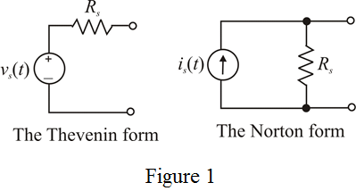

Write the expression for output voltage.
Substitute for  and
and  for
for  in the equation.
in the equation.
…… (1)
The two alternative representations of a signal source – The Thevenin form and the Norton form are shown in Figure 1.

Write the expression for output voltage.
Substitute for and for in the equation.
…… (1)
Write the expression for output voltage.
Substitute  for
for  and
and  for
for  in the equation.
in the equation.
…… (2)
Solve equations (1) and (2).
Calculate the Norton current.
Therefore, the Thevenin voltage, Norton current and source resistance are,
.